Enhanced Heat Map
heatmap.2.RdA heat map is a false color image (basically
image(t(x))) with a dendrogram added to the left side
and/or to the top. Typically, reordering of the rows and columns
according to some set of values (row or column means) within the
restrictions imposed by the dendrogram is carried out.
This heatmap provides a number of extensions to the standard R
heatmap function.
heatmap.2 (x,
# dendrogram control
Rowv = TRUE,
Colv=if(symm)"Rowv" else TRUE,
distfun = dist,
hclustfun = hclust,
dendrogram = c("both","row","column","none"),
reorderfun = function(d, w) reorder(d, w),
symm = FALSE,
# data scaling
scale = c("none","row", "column"),
na.rm=TRUE,
# image plot
revC = identical(Colv, "Rowv"),
add.expr,
# mapping data to colors
breaks,
symbreaks=any(x < 0, na.rm=TRUE) || scale!="none",
# colors
col="heat.colors",
# block sepration
colsep,
rowsep,
sepcolor="white",
sepwidth=c(0.05,0.05),
# cell labeling
cellnote,
notecex=1.0,
notecol="cyan",
na.color=par("bg"),
# level trace
trace=c("column","row","both","none"),
tracecol="cyan",
hline=median(breaks),
vline=median(breaks),
linecol=tracecol,
# Row/Column Labeling
margins = c(5, 5),
ColSideColors,
RowSideColors,
cexRow = 0.2 + 1/log10(nr),
cexCol = 0.2 + 1/log10(nc),
labRow = NULL,
labCol = NULL,
srtRow = NULL,
srtCol = NULL,
adjRow = c(0,NA),
adjCol = c(NA,0),
offsetRow = 0.5,
offsetCol = 0.5,
colRow = NULL,
colCol = NULL,
# color key + density info
key = TRUE,
keysize = 1.5,
density.info=c("histogram","density","none"),
denscol=tracecol,
symkey = any(x < 0, na.rm=TRUE) || symbreaks,
densadj = 0.25,
key.title = NULL,
key.xlab = NULL,
key.ylab = NULL,
key.xtickfun = NULL,
key.ytickfun = NULL,
key.par=list(),
# plot labels
main = NULL,
xlab = NULL,
ylab = NULL,
# plot layout
lmat = NULL,
lhei = NULL,
lwid = NULL,
# extras
extrafun=NULL,
...
)Arguments
- x
numeric matrix of the values to be plotted.
- Rowv
determines if and how the row dendrogram should be reordered. By default, it is TRUE, which implies dendrogram is computed and reordered based on row means. If NULL or FALSE, then no dendrogram is computed and no reordering is done. If a
dendrogram, then it is used "as-is", ie without any reordering. If a vector of integers, then dendrogram is computed and reordered based on the order of the vector.- Colv
determines if and how the column dendrogram should be reordered. Has the options as the
Rowvargument above and additionally whenxis a square matrix,Colv="Rowv"means that columns should be treated identically to the rows.- distfun
function used to compute the distance (dissimilarity) between both rows and columns. Defaults to
dist.- hclustfun
function used to compute the hierarchical clustering when
RowvorColvare not dendrograms. Defaults tohclust.- dendrogram
character string indicating whether to draw 'none', 'row', 'column' or 'both' dendrograms. Defaults to 'both'. However, if Rowv (or Colv) is FALSE or NULL and dendrogram is 'both', then a warning is issued and Rowv (or Colv) arguments are honoured.
- reorderfun
function(d, w)of dendrogram and weights for reordering the row and column dendrograms. The default usesstats{reorder.dendrogram}
.
- symm
logical indicating if
xshould be treated symmetrically; can only be true whenxis a square matrix.
- scale
character indicating if the values should be centered and scaled in either the row direction or the column direction, or none. The default is
"none".- na.rm
logical indicating whether
NA's should be removed.
- revC
logical indicating if the column order should be
reversed for plotting, such that e.g., for the symmetric case, the symmetry axis is as usual.- add.expr
expression that will be evaluated after the call to
image. Can be used to add components to the plot.- breaks
(optional) Either a numeric vector indicating the splitting points for binning
xinto colors, or a integer number of break points to be used, in which case the break points will be spaced equally betweenmin(x)andmax(x).- symbreaks
Boolean indicating whether breaks should be made symmetric about 0. Defaults to
TRUEif the data includes negative values, and toFALSEotherwise.- col
colors used for the image. Defaults to heat colors (
heat.colors).
- colsep, rowsep, sepcolor
(optional) vector of integers indicating which columns or rows should be separated from the preceding columns or rows by a narrow space of color
sepcolor.- sepwidth
(optional) Vector of length 2 giving the width (colsep) or height (rowsep) the separator box drawn by colsep and rowsep as a function of the width (colsep) or height (rowsep) of a cell. Defaults to
c(0.05, 0.05)
- cellnote
(optional) matrix of character strings which will be placed within each color cell, e.g. p-value symbols.
- notecex
(optional) numeric scaling factor for
cellnoteitems.- notecol
(optional) character string specifying the color for
cellnotetext. Defaults to "cyan".- na.color
Color to use for missing value (
NA). Defaults to the plot background color.
- trace
character string indicating whether a solid "trace" line should be drawn across 'row's or down 'column's, 'both' or 'none'. The distance of the line from the center of each color-cell is proportional to the size of the measurement. Defaults to 'column'.
- tracecol
character string giving the color for "trace" line. Defaults to "cyan".
- hline, vline, linecol
Vector of values within cells where a horizontal or vertical dotted line should be drawn. The color of the line is controlled by
linecol. Horizontal lines are only plotted iftraceis 'row' or 'both'. Vertical lines are only drawn iftrace'column' or 'both'.hlineandvlinedefault to the median of the breaks,linecoldefaults to the value oftracecol.
- margins
numeric vector of length 2 containing the margins (see
par(mar= *)) for column and row names, respectively.- ColSideColors
(optional) character vector of length
ncol(x)containing the color names for a horizontal side bar that may be used to annotate the columns ofx.- RowSideColors
(optional) character vector of length
nrow(x)containing the color names for a vertical side bar that may be used to annotate the rows ofx.- cexRow, cexCol
positive numbers, used as
cex.axisin for the row or column axis labeling. The defaults currently only use number of rows or columns, respectively.- labRow, labCol
character vectors with row and column labels to use; these default to
rownames(x)orcolnames(x), respectively.- srtRow, srtCol
angle of row/column labels, in degrees from horizontal
- adjRow, adjCol
2-element vector giving the (left-right, top-bottom) justification of row/column labels (relative to the text orientation).
- offsetRow, offsetCol
Number of character-width spaces to place between row/column labels and the edge of the plotting region.
- colRow, colCol
color of row/column labels, either a scalar to set the color of all labels the same, or a vector providing the colors of each label item
- key
logical indicating whether a color-key should be shown.
- keysize
numeric value indicating the size of the key
- density.info
character string indicating whether to superimpose a 'histogram', a 'density' plot, or no plot ('none') on the color-key.
- denscol
character string giving the color for the density display specified by
density.info, defaults to the same value astracecol.- symkey
Boolean indicating whether the color key should be made symmetric about 0. Defaults to
TRUEif the data includes negative values, and toFALSEotherwise.- densadj
Numeric scaling value for tuning the kernel width when a density plot is drawn on the color key. (See the
adjustparameter for thedensityfunction for details.) Defaults to 0.25.- key.title
main title of the color key. If set to NA no title will be plotted.
- key.xlab
x axis label of the color key. If set to NA no label will be plotted.
- key.ylab
y axis label of the color key. If set to NA no label will be plotted.
- key.xtickfun
function computing tick location and labels for the xaxis of the color key. Returns a named list containing parameters that can be passed to
axis. See examples.- key.ytickfun
function computing tick location and labels for the y axis of the color key. Returns a named list containing parameters that can be passed to
axis. See examples.- key.par
graphical parameters for the color key. Named list that can be passed to
par.
- lmat, lhei, lwid
visual layout: position matrix, column height, column width. See below for details
- extrafun
A function to be called after all other work. See examples.
- ...
additional arguments passed on to
image
Details
If either Rowv or Colv are dendrograms they are honored
(and not reordered). Otherwise, dendrograms are computed as
dd <- as.dendrogram(hclustfun(distfun(X))) where X is
either x or t(x).
If either is a vector (of “weights”) then the appropriate
dendrogram is reordered according to the supplied values subject to
the constraints imposed by the dendrogram, by reorder(dd,
Rowv), in the row case.
If either is missing, as by default, then the ordering of the
corresponding dendrogram is by the mean value of the rows/columns,
i.e., in the case of rows, Rowv <- rowMeans(x, na.rm=na.rm).
If either is NULL, no reordering will be done for
the corresponding side.
If scale="row" (or scale="col") the rows (columns) are
scaled to have mean zero and standard deviation one. There is some
empirical evidence from genomic plotting that this is useful.
The default colors range from red to white (heat.colors) and
are not pretty. Consider using enhancements such as the
RColorBrewer package,
https://cran.r-project.org/package=RColorBrewer
to select better colors.
By default four components will be displayed in the plot. At the top
left is the color key, top right is the column dendrogram, bottom left
is the row dendrogram, bottom right is the image plot. When
RowSideColor or ColSideColor are provided, an additional row or column
is inserted in the appropriate location. This layout can be
overriden by specifiying appropriate values for lmat,
lwid, and lhei. lmat controls the relative
postition of each element, while lwid controls the column
width, and lhei controls the row height. See the help page for
layout for details on how to use these
arguments.
Note
The original rows and columns are reordered to match the dendrograms
Rowv and Colv (if present).
heatmap.2() uses layout to arragent the plot
elements. Consequentially, it can not be used in a multi
column/row layout using layout(...),
par(mfrow=...) or (mfcol=...).
Value
Invisibly, a list with components
- rowInd
row index permutation vector as returned by
order.dendrogram.- colInd
column index permutation vector.
- call
the matched call
- rowMeans, rowSDs
mean and standard deviation of each row: only present if
scale="row"- colMeans, colSDs
mean and standard deviation of each column: only present if
scale="column"- carpet
reordered and scaled 'x' values used generate the main 'carpet'
- rowDendrogram
row dendrogram, if present
- colDendrogram
column dendrogram, if present
- breaks
values used for color break points
- col
colors used
- vline
center-line value used for column trace, present only if
trace="both"ortrace="column"- hline
center-line value used for row trace, present only if
trace="both"ortrace="row"- colorTable
A three-column data frame providing the lower and upper bound and color for each bin
- layout
A named list containing the values used for
lmat,lhei, andlwid.
Examples
data(mtcars)
x <- as.matrix(mtcars)
rc <- rainbow(nrow(x), start=0, end=.3)
cc <- rainbow(ncol(x), start=0, end=.3)
##
## demonstrate the effect of row and column dendrogram options
##
heatmap.2(x) ## default - dendrogram plotted and reordering done.
heatmap.2(x, dendrogram="none") ## no dendrogram plotted, but reordering done.
heatmap.2(x, dendrogram="row") ## row dendrogram plotted and row reordering done.
heatmap.2(x, dendrogram="col") ## col dendrogram plotted and col reordering done.
heatmap.2(x, keysize=2) ## default - dendrogram plotted and reordering done.
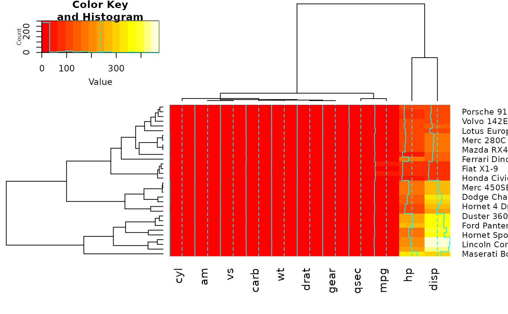
heatmap.2(x, Rowv=FALSE, dendrogram="both") ## generates a warning!
#> Warning: Discrepancy: Rowv is FALSE, while dendrogram is `both'. Omitting row dendogram.
 heatmap.2(x, Rowv=NULL, dendrogram="both") ## generates a warning!
#> Warning: Discrepancy: Rowv is FALSE, while dendrogram is `both'. Omitting row dendogram.
heatmap.2(x, Colv=FALSE, dendrogram="both") ## generates a warning!
#> Warning: Discrepancy: Colv is FALSE, while dendrogram is `both'. Omitting column dendogram.
## Reorder dendrogram by branch means rather than sums
heatmap.2(x, reorderfun=function(d, w) reorder(d, w, agglo.FUN = mean) )
## plot a sub-cluster using the same color coding as for the full heatmap
full <- heatmap.2(x)
heatmap.2(x, Rowv=NULL, dendrogram="both") ## generates a warning!
#> Warning: Discrepancy: Rowv is FALSE, while dendrogram is `both'. Omitting row dendogram.
heatmap.2(x, Colv=FALSE, dendrogram="both") ## generates a warning!
#> Warning: Discrepancy: Colv is FALSE, while dendrogram is `both'. Omitting column dendogram.
## Reorder dendrogram by branch means rather than sums
heatmap.2(x, reorderfun=function(d, w) reorder(d, w, agglo.FUN = mean) )
## plot a sub-cluster using the same color coding as for the full heatmap
full <- heatmap.2(x)
 heatmap.2(x, Colv=full$colDendrogram[[2]], breaks=full$breaks) # column subset
heatmap.2(x, Rowv=full$rowDendrogram[[1]], breaks=full$breaks) # row subset
heatmap.2(x, Colv=full$colDendrogram[[2]],
Rowv=full$rowDendrogram[[1]], breaks=full$breaks) # both
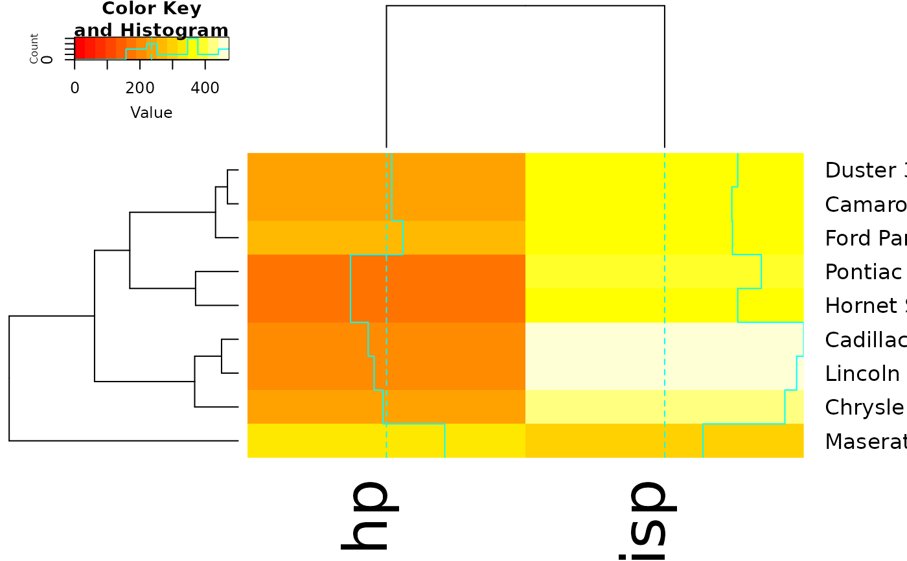
## Show effect of row and column label rotation
heatmap.2(x, srtCol=NULL)
heatmap.2(x, Colv=full$colDendrogram[[2]], breaks=full$breaks) # column subset
heatmap.2(x, Rowv=full$rowDendrogram[[1]], breaks=full$breaks) # row subset
heatmap.2(x, Colv=full$colDendrogram[[2]],
Rowv=full$rowDendrogram[[1]], breaks=full$breaks) # both
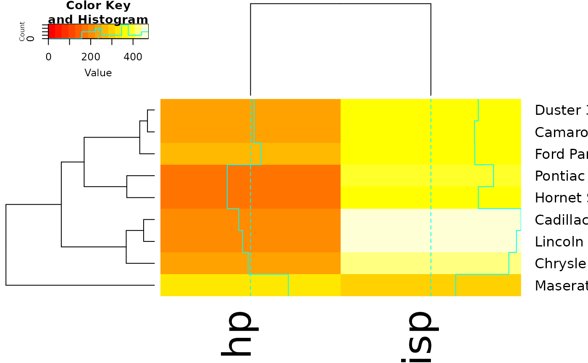
## Show effect of row and column label rotation
heatmap.2(x, srtCol=NULL)
 heatmap.2(x, srtCol=0, adjCol = c(0.5,1) )
heatmap.2(x, srtCol=0, adjCol = c(0.5,1) )
 heatmap.2(x, srtCol=45, adjCol = c(1,1) )
heatmap.2(x, srtCol=135, adjCol = c(1,0) )
heatmap.2(x, srtCol=180, adjCol = c(0.5,0) )
heatmap.2(x, srtCol=225, adjCol = c(0,0) ) ## not very useful
heatmap.2(x, srtCol=270, adjCol = c(0,0.5) )
heatmap.2(x, srtCol=315, adjCol = c(0,1) )
heatmap.2(x, srtCol=360, adjCol = c(0.5,1) )
heatmap.2(x, srtRow=45, adjRow=c(0, 1) )
heatmap.2(x, srtRow=45, adjRow=c(0, 1), srtCol=45, adjCol=c(1,1) )
heatmap.2(x, srtRow=45, adjRow=c(0, 1), srtCol=270, adjCol=c(0,0.5) )
## Show effect of offsetRow/offsetCol (only works when srtRow/srtCol is
## not also present)
heatmap.2(x, offsetRow=0, offsetCol=0)
heatmap.2(x, offsetRow=1, offsetCol=1)
heatmap.2(x, offsetRow=2, offsetCol=2)
heatmap.2(x, offsetRow=-1, offsetCol=-1)
heatmap.2(x, srtRow=0, srtCol=90, offsetRow=0, offsetCol=0)
heatmap.2(x, srtCol=45, adjCol = c(1,1) )
heatmap.2(x, srtCol=135, adjCol = c(1,0) )
heatmap.2(x, srtCol=180, adjCol = c(0.5,0) )
heatmap.2(x, srtCol=225, adjCol = c(0,0) ) ## not very useful
heatmap.2(x, srtCol=270, adjCol = c(0,0.5) )
heatmap.2(x, srtCol=315, adjCol = c(0,1) )
heatmap.2(x, srtCol=360, adjCol = c(0.5,1) )
heatmap.2(x, srtRow=45, adjRow=c(0, 1) )
heatmap.2(x, srtRow=45, adjRow=c(0, 1), srtCol=45, adjCol=c(1,1) )
heatmap.2(x, srtRow=45, adjRow=c(0, 1), srtCol=270, adjCol=c(0,0.5) )
## Show effect of offsetRow/offsetCol (only works when srtRow/srtCol is
## not also present)
heatmap.2(x, offsetRow=0, offsetCol=0)
heatmap.2(x, offsetRow=1, offsetCol=1)
heatmap.2(x, offsetRow=2, offsetCol=2)
heatmap.2(x, offsetRow=-1, offsetCol=-1)
heatmap.2(x, srtRow=0, srtCol=90, offsetRow=0, offsetCol=0)
 heatmap.2(x, srtRow=0, srtCol=90, offsetRow=1, offsetCol=1)
heatmap.2(x, srtRow=0, srtCol=90, offsetRow=2, offsetCol=2)
heatmap.2(x, srtRow=0, srtCol=90, offsetRow=-1, offsetCol=-1)
## Show how to use 'extrafun' to replace the 'key' with a scatterplot
lmat <- rbind( c(5,3,4), c(2,1,4) )
lhei <- c(1.5, 4)
lwid <- c(1.5, 4, 0.75)
myplot <- function() {
oldpar <- par("mar")
par(mar=c(5.1, 4.1, 0.5, 0.5))
plot(mpg ~ hp, data=x)
}
heatmap.2(x, lmat=lmat, lhei=lhei, lwid=lwid, key=FALSE, extrafun=myplot)
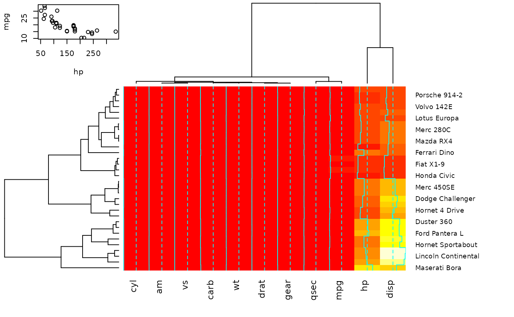
## show how to customize the color key
heatmap.2(x,
key.title=NA, # no title
key.xlab=NA, # no xlab
key.par=list(mgp=c(1.5, 0.5, 0),
mar=c(2.5, 2.5, 1, 0)),
key.xtickfun=function() {
breaks <- parent.frame()$breaks
return(list(
at=parent.frame()$scale01(c(breaks[1],
breaks[length(breaks)])),
labels=c(as.character(breaks[1]),
as.character(breaks[length(breaks)]))
))
})
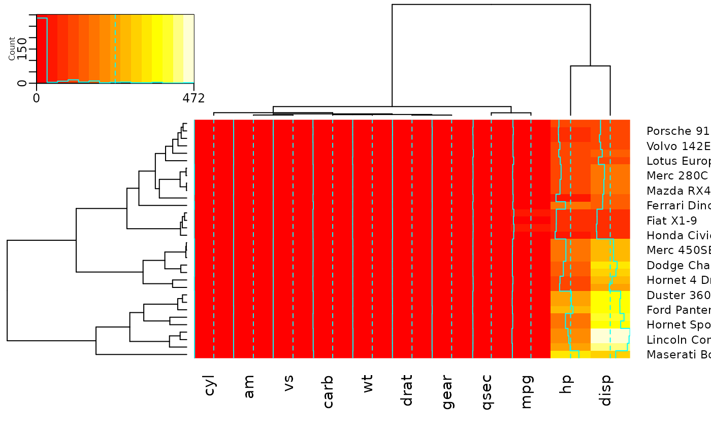
heatmap.2(x,
breaks=256,
key.title=NA,
key.xlab=NA,
key.par=list(mgp=c(1.5, 0.5, 0),
mar=c(1, 2.5, 1, 0)),
key.xtickfun=function() {
cex <- par("cex")*par("cex.axis")
side <- 1
line <- 0
col <- par("col.axis")
font <- par("font.axis")
mtext("low", side=side, at=0, adj=0,
line=line, cex=cex, col=col, font=font)
mtext("high", side=side, at=1, adj=1,
line=line, cex=cex, col=col, font=font)
return(list(labels=FALSE, tick=FALSE))
})
##
## Show effect of z-score scaling within columns, blue-red color scale
##
hv <- heatmap.2(x, col=bluered, scale="column", tracecol="#303030")
###
## Look at the return values
###
names(hv)
#> [1] "rowInd" "colInd" "call" "colMeans"
#> [5] "colSDs" "carpet" "rowDendrogram" "colDendrogram"
#> [9] "breaks" "col" "vline" "colorTable"
#> [13] "layout"
## Show the mapping of z-score values to color bins
hv$colorTable
#> low high color
#> 1 -3.2116766 -2.7834531 #0000FF
#> 2 -2.7834531 -2.3552295 #2424FF
#> 3 -2.3552295 -1.9270060 #4949FF
#> 4 -1.9270060 -1.4987824 #6D6DFF
#> 5 -1.4987824 -1.0705589 #9292FF
#> 6 -1.0705589 -0.6423353 #B6B6FF
#> 7 -0.6423353 -0.2141118 #DBDBFF
#> 8 -0.2141118 0.2141118 #FFFFFF
#> 9 0.2141118 0.6423353 #FFDBDB
#> 10 0.6423353 1.0705589 #FFB6B6
#> 11 1.0705589 1.4987824 #FF9292
#> 12 1.4987824 1.9270060 #FF6D6D
#> 13 1.9270060 2.3552295 #FF4949
#> 14 2.3552295 2.7834531 #FF2424
#> 15 2.7834531 3.2116766 #FF0000
## Extract the range associated with white
hv$colorTable[hv$colorTable[,"color"]=="#FFFFFF",]
#> low high color
#> 8 -0.2141118 0.2141118 #FFFFFF
## Determine the original data values that map to white
whiteBin <- unlist(hv$colorTable[hv$colorTable[,"color"]=="#FFFFFF",1:2])
rbind(whiteBin[1] * hv$colSDs + hv$colMeans,
whiteBin[2] * hv$colSDs + hv$colMeans )
#> cyl am vs carb wt drat gear qsec
#> [1,] 5.805113 0.2994102 0.3295842 2.466667 3.007751 3.482081 3.529527 17.46614
#> [2,] 6.569887 0.5130898 0.5454158 3.158333 3.426749 3.711044 3.845473 18.23136
#> mpg hp disp
#> [1,] 18.80018 132.0074 204.1851
#> [2,] 21.38107 161.3676 257.2586
##
## A more decorative heatmap, with z-score scaling along columns
##
hv <- heatmap.2(x, col=cm.colors(255), scale="column",
RowSideColors=rc, ColSideColors=cc, margin=c(5, 10),
xlab="specification variables", ylab= "Car Models",
main="heatmap(<Mtcars data>, ..., scale=\"column\")",
tracecol="green", density="density")
## Note that the breakpoints are now symmetric about 0
## Color the labels to match RowSideColors and ColSideColors
hv <- heatmap.2(x, col=cm.colors(255), scale="column",
RowSideColors=rc, ColSideColors=cc, margin=c(5, 10),
xlab="specification variables", ylab= "Car Models",
main="heatmap(<Mtcars data>, ..., scale=\"column\")",
tracecol="green", density="density", colRow=rc, colCol=cc,
srtCol=45, adjCol=c(0.5,1))
data(attitude)
round(Ca <- cor(attitude), 2)
#> rating complaints privileges learning raises critical advance
#> rating 1.00 0.83 0.43 0.62 0.59 0.16 0.16
#> complaints 0.83 1.00 0.56 0.60 0.67 0.19 0.22
#> privileges 0.43 0.56 1.00 0.49 0.45 0.15 0.34
#> learning 0.62 0.60 0.49 1.00 0.64 0.12 0.53
#> raises 0.59 0.67 0.45 0.64 1.00 0.38 0.57
#> critical 0.16 0.19 0.15 0.12 0.38 1.00 0.28
#> advance 0.16 0.22 0.34 0.53 0.57 0.28 1.00
symnum(Ca) # simple graphic
#> rt cm p l rs cr a
#> rating 1
#> complaints + 1
#> privileges . . 1
#> learning , . . 1
#> raises . , . , 1
#> critical . 1
#> advance . . . 1
#> attr(,"legend")
#> [1] 0 ‘ ’ 0.3 ‘.’ 0.6 ‘,’ 0.8 ‘+’ 0.9 ‘*’ 0.95 ‘B’ 1
# with reorder
heatmap.2(Ca, symm=TRUE, margin=c(6, 6), trace="none" )
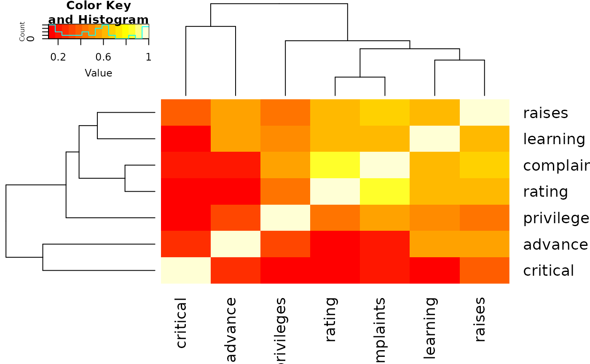
# without reorder
heatmap.2(Ca, Rowv=FALSE, symm=TRUE, margin=c(6, 6), trace="none" )
#> Warning: Discrepancy: Rowv is FALSE, while dendrogram is `both'. Omitting row dendogram.
#> Warning: Discrepancy: Colv is FALSE, while dendrogram is `column'. Omitting column dendogram.
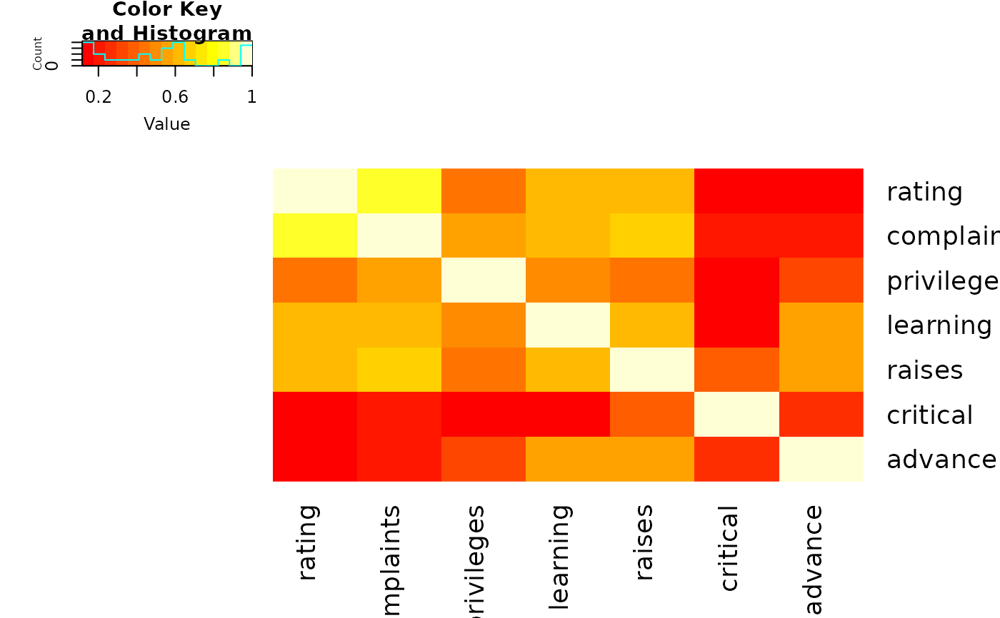
## Place the color key below the image plot
heatmap.2(x, lmat=rbind( c(0, 3), c(2,1), c(0,4) ), lhei=c(1.5, 4, 2 ) )
## Place the color key to the top right of the image plot
heatmap.2(x, lmat=rbind( c(0, 3, 4), c(2,1,0 ) ), lwid=c(1.5, 4, 2 ) )
## For variable clustering, rather use distance based on cor():
data(USJudgeRatings)
symnum( cU <- cor(USJudgeRatings) )
#> CO I DM DI CF DE PR F O W PH R
#> CONT 1
#> INTG 1
#> DMNR B 1
#> DILG + + 1
#> CFMG + + B 1
#> DECI + + B B 1
#> PREP + + B B B 1
#> FAMI + + B * * B 1
#> ORAL * * B B * B B 1
#> WRIT * + B * * B B B 1
#> PHYS , , + + + + + + + 1
#> RTEN * * * * * B * B B * 1
#> attr(,"legend")
#> [1] 0 ‘ ’ 0.3 ‘.’ 0.6 ‘,’ 0.8 ‘+’ 0.9 ‘*’ 0.95 ‘B’ 1
hU <- heatmap.2(cU, Rowv=FALSE, symm=TRUE, col=topo.colors(16),
distfun=function(c) as.dist(1 - c), trace="none")
#> Warning: Discrepancy: Rowv is FALSE, while dendrogram is `both'. Omitting row dendogram.
#> Warning: Discrepancy: Colv is FALSE, while dendrogram is `column'. Omitting column dendogram.
## The Correlation matrix with same reordering:
hM <- format(round(cU, 2))
hM
#> CONT INTG DMNR DILG CFMG DECI PREP FAMI ORAL
#> CONT " 1.00" "-0.13" "-0.15" " 0.01" " 0.14" " 0.09" " 0.01" "-0.03" "-0.01"
#> INTG "-0.13" " 1.00" " 0.96" " 0.87" " 0.81" " 0.80" " 0.88" " 0.87" " 0.91"
#> DMNR "-0.15" " 0.96" " 1.00" " 0.84" " 0.81" " 0.80" " 0.86" " 0.84" " 0.91"
#> DILG " 0.01" " 0.87" " 0.84" " 1.00" " 0.96" " 0.96" " 0.98" " 0.96" " 0.95"
#> CFMG " 0.14" " 0.81" " 0.81" " 0.96" " 1.00" " 0.98" " 0.96" " 0.94" " 0.95"
#> DECI " 0.09" " 0.80" " 0.80" " 0.96" " 0.98" " 1.00" " 0.96" " 0.94" " 0.95"
#> PREP " 0.01" " 0.88" " 0.86" " 0.98" " 0.96" " 0.96" " 1.00" " 0.99" " 0.98"
#> FAMI "-0.03" " 0.87" " 0.84" " 0.96" " 0.94" " 0.94" " 0.99" " 1.00" " 0.98"
#> ORAL "-0.01" " 0.91" " 0.91" " 0.95" " 0.95" " 0.95" " 0.98" " 0.98" " 1.00"
#> WRIT "-0.04" " 0.91" " 0.89" " 0.96" " 0.94" " 0.95" " 0.99" " 0.99" " 0.99"
#> PHYS " 0.05" " 0.74" " 0.79" " 0.81" " 0.88" " 0.87" " 0.85" " 0.84" " 0.89"
#> RTEN "-0.03" " 0.94" " 0.94" " 0.93" " 0.93" " 0.92" " 0.95" " 0.94" " 0.98"
#> WRIT PHYS RTEN
#> CONT "-0.04" " 0.05" "-0.03"
#> INTG " 0.91" " 0.74" " 0.94"
#> DMNR " 0.89" " 0.79" " 0.94"
#> DILG " 0.96" " 0.81" " 0.93"
#> CFMG " 0.94" " 0.88" " 0.93"
#> DECI " 0.95" " 0.87" " 0.92"
#> PREP " 0.99" " 0.85" " 0.95"
#> FAMI " 0.99" " 0.84" " 0.94"
#> ORAL " 0.99" " 0.89" " 0.98"
#> WRIT " 1.00" " 0.86" " 0.97"
#> PHYS " 0.86" " 1.00" " 0.91"
#> RTEN " 0.97" " 0.91" " 1.00"
# now with the correlation matrix on the plot itself
heatmap.2(cU, Rowv=FALSE, symm=TRUE, col=rev(heat.colors(16)),
distfun=function(c) as.dist(1 - c), trace="none",
cellnote=hM)
#> Warning: Discrepancy: Rowv is FALSE, while dendrogram is `both'. Omitting row dendogram.
#> Warning: Discrepancy: Colv is FALSE, while dendrogram is `column'. Omitting column dendogram.
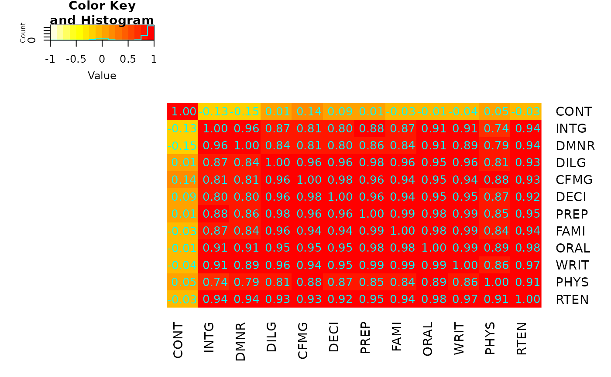
## genechip data examples
if (FALSE) { # \dontrun{
library(affy)
data(SpikeIn)
pms <- SpikeIn@pm
# just the data, scaled across rows
heatmap.2(pms, col=rev(heat.colors(16)), main="SpikeIn@pm",
xlab="Relative Concentration", ylab="Probeset",
scale="row")
# fold change vs "12.50" sample
data <- pms / pms[, "12.50"]
data <- ifelse(data>1, data, -1/data)
heatmap.2(data, breaks=16, col=redgreen, tracecol="blue",
main="SpikeIn@pm Fold Changes\nrelative to 12.50 sample",
xlab="Relative Concentration", ylab="Probeset")
} # }
heatmap.2(x, srtRow=0, srtCol=90, offsetRow=1, offsetCol=1)
heatmap.2(x, srtRow=0, srtCol=90, offsetRow=2, offsetCol=2)
heatmap.2(x, srtRow=0, srtCol=90, offsetRow=-1, offsetCol=-1)
## Show how to use 'extrafun' to replace the 'key' with a scatterplot
lmat <- rbind( c(5,3,4), c(2,1,4) )
lhei <- c(1.5, 4)
lwid <- c(1.5, 4, 0.75)
myplot <- function() {
oldpar <- par("mar")
par(mar=c(5.1, 4.1, 0.5, 0.5))
plot(mpg ~ hp, data=x)
}
heatmap.2(x, lmat=lmat, lhei=lhei, lwid=lwid, key=FALSE, extrafun=myplot)
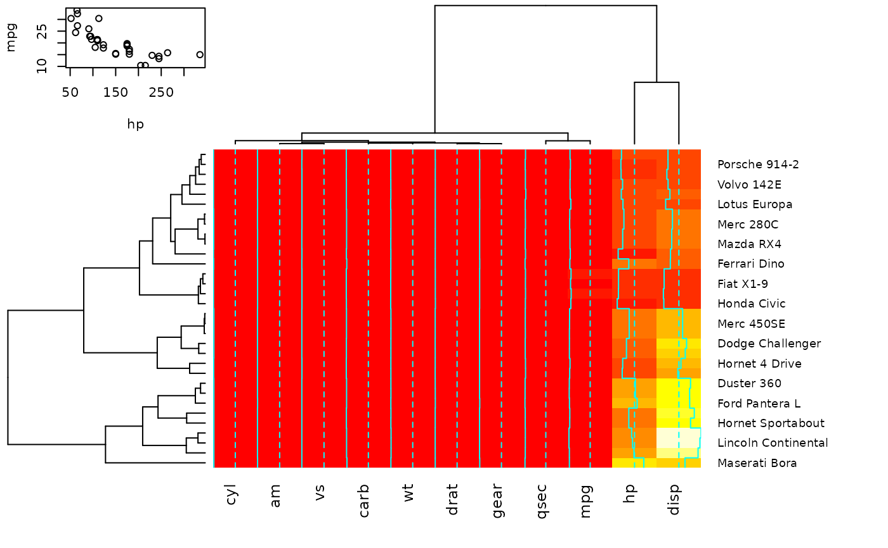
## show how to customize the color key
heatmap.2(x,
key.title=NA, # no title
key.xlab=NA, # no xlab
key.par=list(mgp=c(1.5, 0.5, 0),
mar=c(2.5, 2.5, 1, 0)),
key.xtickfun=function() {
breaks <- parent.frame()$breaks
return(list(
at=parent.frame()$scale01(c(breaks[1],
breaks[length(breaks)])),
labels=c(as.character(breaks[1]),
as.character(breaks[length(breaks)]))
))
})
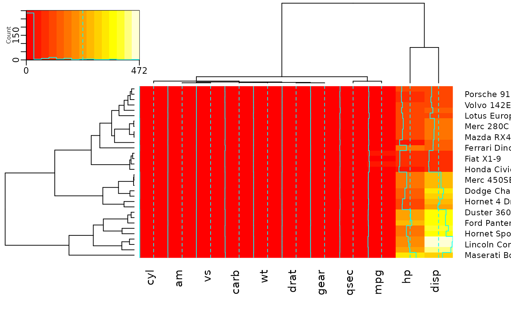
heatmap.2(x,
breaks=256,
key.title=NA,
key.xlab=NA,
key.par=list(mgp=c(1.5, 0.5, 0),
mar=c(1, 2.5, 1, 0)),
key.xtickfun=function() {
cex <- par("cex")*par("cex.axis")
side <- 1
line <- 0
col <- par("col.axis")
font <- par("font.axis")
mtext("low", side=side, at=0, adj=0,
line=line, cex=cex, col=col, font=font)
mtext("high", side=side, at=1, adj=1,
line=line, cex=cex, col=col, font=font)
return(list(labels=FALSE, tick=FALSE))
})
##
## Show effect of z-score scaling within columns, blue-red color scale
##
hv <- heatmap.2(x, col=bluered, scale="column", tracecol="#303030")
###
## Look at the return values
###
names(hv)
#> [1] "rowInd" "colInd" "call" "colMeans"
#> [5] "colSDs" "carpet" "rowDendrogram" "colDendrogram"
#> [9] "breaks" "col" "vline" "colorTable"
#> [13] "layout"
## Show the mapping of z-score values to color bins
hv$colorTable
#> low high color
#> 1 -3.2116766 -2.7834531 #0000FF
#> 2 -2.7834531 -2.3552295 #2424FF
#> 3 -2.3552295 -1.9270060 #4949FF
#> 4 -1.9270060 -1.4987824 #6D6DFF
#> 5 -1.4987824 -1.0705589 #9292FF
#> 6 -1.0705589 -0.6423353 #B6B6FF
#> 7 -0.6423353 -0.2141118 #DBDBFF
#> 8 -0.2141118 0.2141118 #FFFFFF
#> 9 0.2141118 0.6423353 #FFDBDB
#> 10 0.6423353 1.0705589 #FFB6B6
#> 11 1.0705589 1.4987824 #FF9292
#> 12 1.4987824 1.9270060 #FF6D6D
#> 13 1.9270060 2.3552295 #FF4949
#> 14 2.3552295 2.7834531 #FF2424
#> 15 2.7834531 3.2116766 #FF0000
## Extract the range associated with white
hv$colorTable[hv$colorTable[,"color"]=="#FFFFFF",]
#> low high color
#> 8 -0.2141118 0.2141118 #FFFFFF
## Determine the original data values that map to white
whiteBin <- unlist(hv$colorTable[hv$colorTable[,"color"]=="#FFFFFF",1:2])
rbind(whiteBin[1] * hv$colSDs + hv$colMeans,
whiteBin[2] * hv$colSDs + hv$colMeans )
#> cyl am vs carb wt drat gear qsec
#> [1,] 5.805113 0.2994102 0.3295842 2.466667 3.007751 3.482081 3.529527 17.46614
#> [2,] 6.569887 0.5130898 0.5454158 3.158333 3.426749 3.711044 3.845473 18.23136
#> mpg hp disp
#> [1,] 18.80018 132.0074 204.1851
#> [2,] 21.38107 161.3676 257.2586
##
## A more decorative heatmap, with z-score scaling along columns
##
hv <- heatmap.2(x, col=cm.colors(255), scale="column",
RowSideColors=rc, ColSideColors=cc, margin=c(5, 10),
xlab="specification variables", ylab= "Car Models",
main="heatmap(<Mtcars data>, ..., scale=\"column\")",
tracecol="green", density="density")
## Note that the breakpoints are now symmetric about 0
## Color the labels to match RowSideColors and ColSideColors
hv <- heatmap.2(x, col=cm.colors(255), scale="column",
RowSideColors=rc, ColSideColors=cc, margin=c(5, 10),
xlab="specification variables", ylab= "Car Models",
main="heatmap(<Mtcars data>, ..., scale=\"column\")",
tracecol="green", density="density", colRow=rc, colCol=cc,
srtCol=45, adjCol=c(0.5,1))
data(attitude)
round(Ca <- cor(attitude), 2)
#> rating complaints privileges learning raises critical advance
#> rating 1.00 0.83 0.43 0.62 0.59 0.16 0.16
#> complaints 0.83 1.00 0.56 0.60 0.67 0.19 0.22
#> privileges 0.43 0.56 1.00 0.49 0.45 0.15 0.34
#> learning 0.62 0.60 0.49 1.00 0.64 0.12 0.53
#> raises 0.59 0.67 0.45 0.64 1.00 0.38 0.57
#> critical 0.16 0.19 0.15 0.12 0.38 1.00 0.28
#> advance 0.16 0.22 0.34 0.53 0.57 0.28 1.00
symnum(Ca) # simple graphic
#> rt cm p l rs cr a
#> rating 1
#> complaints + 1
#> privileges . . 1
#> learning , . . 1
#> raises . , . , 1
#> critical . 1
#> advance . . . 1
#> attr(,"legend")
#> [1] 0 ‘ ’ 0.3 ‘.’ 0.6 ‘,’ 0.8 ‘+’ 0.9 ‘*’ 0.95 ‘B’ 1
# with reorder
heatmap.2(Ca, symm=TRUE, margin=c(6, 6), trace="none" )
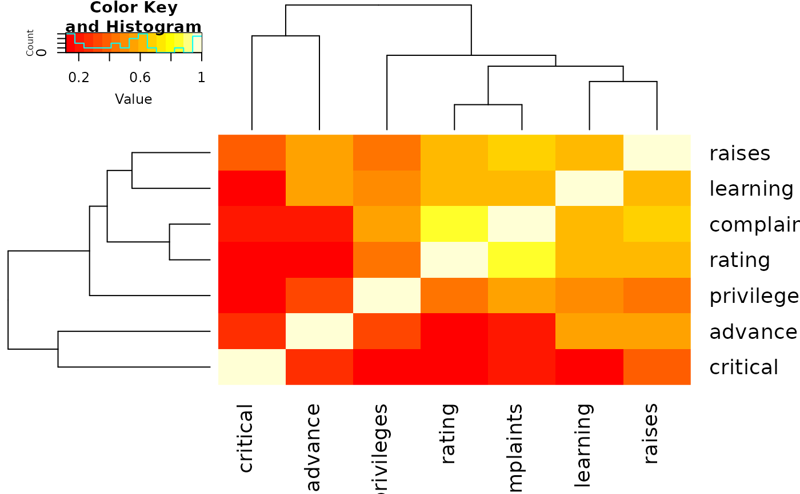
# without reorder
heatmap.2(Ca, Rowv=FALSE, symm=TRUE, margin=c(6, 6), trace="none" )
#> Warning: Discrepancy: Rowv is FALSE, while dendrogram is `both'. Omitting row dendogram.
#> Warning: Discrepancy: Colv is FALSE, while dendrogram is `column'. Omitting column dendogram.
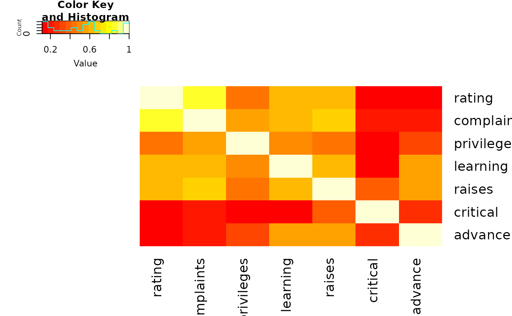
## Place the color key below the image plot
heatmap.2(x, lmat=rbind( c(0, 3), c(2,1), c(0,4) ), lhei=c(1.5, 4, 2 ) )
## Place the color key to the top right of the image plot
heatmap.2(x, lmat=rbind( c(0, 3, 4), c(2,1,0 ) ), lwid=c(1.5, 4, 2 ) )
## For variable clustering, rather use distance based on cor():
data(USJudgeRatings)
symnum( cU <- cor(USJudgeRatings) )
#> CO I DM DI CF DE PR F O W PH R
#> CONT 1
#> INTG 1
#> DMNR B 1
#> DILG + + 1
#> CFMG + + B 1
#> DECI + + B B 1
#> PREP + + B B B 1
#> FAMI + + B * * B 1
#> ORAL * * B B * B B 1
#> WRIT * + B * * B B B 1
#> PHYS , , + + + + + + + 1
#> RTEN * * * * * B * B B * 1
#> attr(,"legend")
#> [1] 0 ‘ ’ 0.3 ‘.’ 0.6 ‘,’ 0.8 ‘+’ 0.9 ‘*’ 0.95 ‘B’ 1
hU <- heatmap.2(cU, Rowv=FALSE, symm=TRUE, col=topo.colors(16),
distfun=function(c) as.dist(1 - c), trace="none")
#> Warning: Discrepancy: Rowv is FALSE, while dendrogram is `both'. Omitting row dendogram.
#> Warning: Discrepancy: Colv is FALSE, while dendrogram is `column'. Omitting column dendogram.
## The Correlation matrix with same reordering:
hM <- format(round(cU, 2))
hM
#> CONT INTG DMNR DILG CFMG DECI PREP FAMI ORAL
#> CONT " 1.00" "-0.13" "-0.15" " 0.01" " 0.14" " 0.09" " 0.01" "-0.03" "-0.01"
#> INTG "-0.13" " 1.00" " 0.96" " 0.87" " 0.81" " 0.80" " 0.88" " 0.87" " 0.91"
#> DMNR "-0.15" " 0.96" " 1.00" " 0.84" " 0.81" " 0.80" " 0.86" " 0.84" " 0.91"
#> DILG " 0.01" " 0.87" " 0.84" " 1.00" " 0.96" " 0.96" " 0.98" " 0.96" " 0.95"
#> CFMG " 0.14" " 0.81" " 0.81" " 0.96" " 1.00" " 0.98" " 0.96" " 0.94" " 0.95"
#> DECI " 0.09" " 0.80" " 0.80" " 0.96" " 0.98" " 1.00" " 0.96" " 0.94" " 0.95"
#> PREP " 0.01" " 0.88" " 0.86" " 0.98" " 0.96" " 0.96" " 1.00" " 0.99" " 0.98"
#> FAMI "-0.03" " 0.87" " 0.84" " 0.96" " 0.94" " 0.94" " 0.99" " 1.00" " 0.98"
#> ORAL "-0.01" " 0.91" " 0.91" " 0.95" " 0.95" " 0.95" " 0.98" " 0.98" " 1.00"
#> WRIT "-0.04" " 0.91" " 0.89" " 0.96" " 0.94" " 0.95" " 0.99" " 0.99" " 0.99"
#> PHYS " 0.05" " 0.74" " 0.79" " 0.81" " 0.88" " 0.87" " 0.85" " 0.84" " 0.89"
#> RTEN "-0.03" " 0.94" " 0.94" " 0.93" " 0.93" " 0.92" " 0.95" " 0.94" " 0.98"
#> WRIT PHYS RTEN
#> CONT "-0.04" " 0.05" "-0.03"
#> INTG " 0.91" " 0.74" " 0.94"
#> DMNR " 0.89" " 0.79" " 0.94"
#> DILG " 0.96" " 0.81" " 0.93"
#> CFMG " 0.94" " 0.88" " 0.93"
#> DECI " 0.95" " 0.87" " 0.92"
#> PREP " 0.99" " 0.85" " 0.95"
#> FAMI " 0.99" " 0.84" " 0.94"
#> ORAL " 0.99" " 0.89" " 0.98"
#> WRIT " 1.00" " 0.86" " 0.97"
#> PHYS " 0.86" " 1.00" " 0.91"
#> RTEN " 0.97" " 0.91" " 1.00"
# now with the correlation matrix on the plot itself
heatmap.2(cU, Rowv=FALSE, symm=TRUE, col=rev(heat.colors(16)),
distfun=function(c) as.dist(1 - c), trace="none",
cellnote=hM)
#> Warning: Discrepancy: Rowv is FALSE, while dendrogram is `both'. Omitting row dendogram.
#> Warning: Discrepancy: Colv is FALSE, while dendrogram is `column'. Omitting column dendogram.
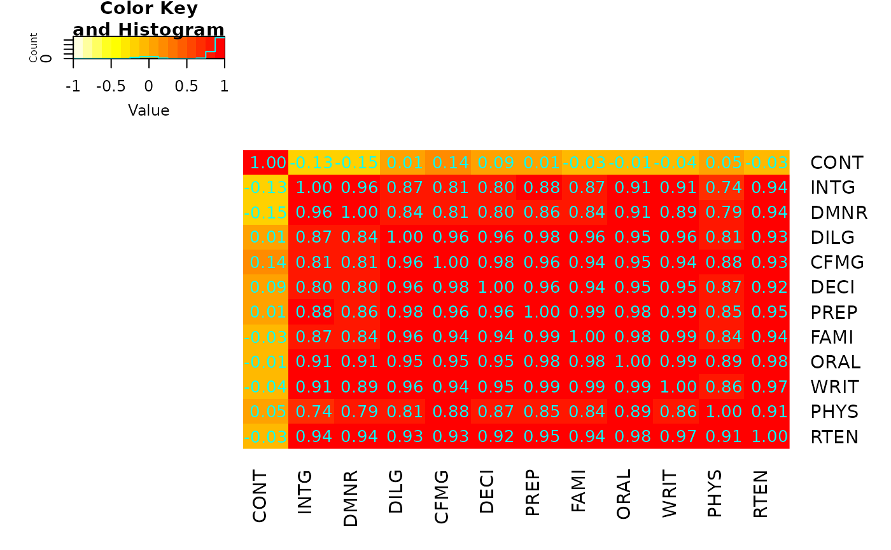
## genechip data examples
if (FALSE) { # \dontrun{
library(affy)
data(SpikeIn)
pms <- SpikeIn@pm
# just the data, scaled across rows
heatmap.2(pms, col=rev(heat.colors(16)), main="SpikeIn@pm",
xlab="Relative Concentration", ylab="Probeset",
scale="row")
# fold change vs "12.50" sample
data <- pms / pms[, "12.50"]
data <- ifelse(data>1, data, -1/data)
heatmap.2(data, breaks=16, col=redgreen, tracecol="blue",
main="SpikeIn@pm Fold Changes\nrelative to 12.50 sample",
xlab="Relative Concentration", ylab="Probeset")
} # }